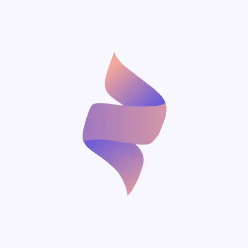
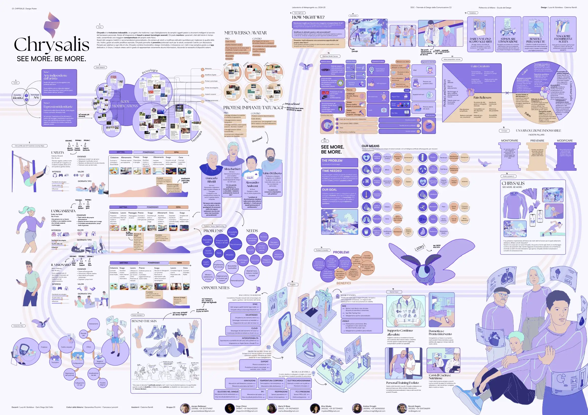
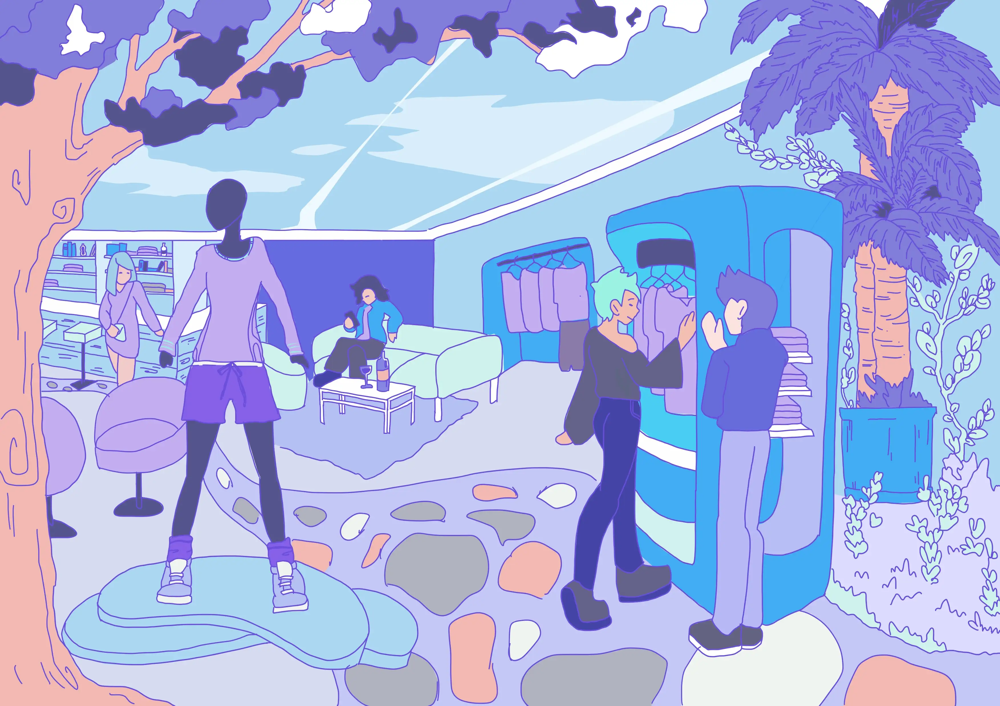
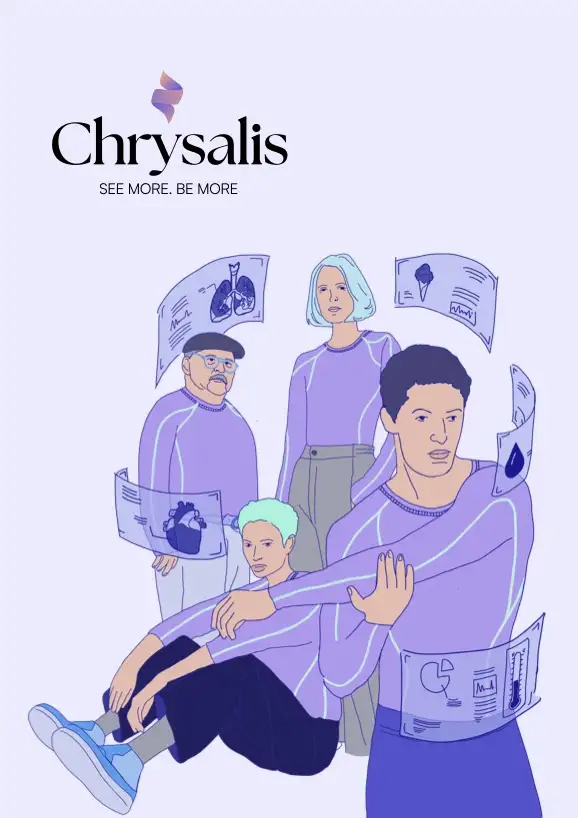

PROJECT
Chrysalis
Chrysalis is a university project developed within the Metaproject Lab at Politecnico di Milano, envisioning a revolutionary smart fabric that monitors vital body parameters. It explores the future of wearables by transforming clothing into an interactive extension of the self.
2024
Segato Niccolò, Miyake Alice, Chinni Diego, Baldessari Jacopo, Ornaghi Andrea, Di Biase Marta
University Project



Chrysalis
2024 - Politecnico di Milano
5 collaborators

